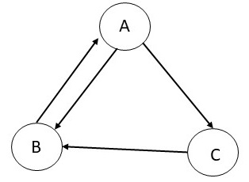

Consider a graph with three nodes and the edges as shown in the
table below for which we will go through first few steps of
calculating the Page rank. We assume that the damping factor is set
to 1.0. We initialize the process by setting the Page rank of each
node to 0.33. In the first iteration, as A has only one incoming
edge from B with a score of 0.33, and B has only one outgoing edge,
its score remains 0.33. B has two incoming edges from A (with a
score of 0.33 with two outgoing edges) and from C (with a score of
0.33 with one outgoing edge). Therefore, B now has a Page rank of
0.5. C has one incoming edge from A (with a score of 0.33 with two
outgoing edges), and therefore, the Page rank of C is 0.17. Follow this
process to calculate their ranks at the end of iteration 2.

a.
What is the Page rank of A at the end of second iteration?
b.
What is the Page rank of B at the end of second iteration?
c.
What is the Page rank of C at the end of second iteration?